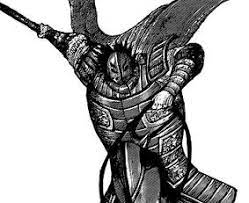

-
Kei Bin
Rei
Descrição
Rei Kei Bin é o atual Rei do Estado de Wei .
-
Go Hou Mei
Sete Dragãos de Fogo
Descrição
Go Hou Mei é um Grande General do estado de Wei e filho do falecido grande general, Go Kei . Ele é atualmente o oficial de mais alto escalão nas Forças Armadas de Wei e detém o título de Dragão de Fogo.
-
Gai Mou
Sete Dragãos de Fogo
Descrição
Gai Mou é um Grande General do estado de Wei e membro dos Sete Dragões do Fogo .
-
Jun Ei
General
Descrição
Jun Ei é um general do estado de Wei e um dos vassalos mais próximos do Exército Go Hou Mei.
-
Ran Bi Haku
General
Descrição
Ran Bi Haku é um general do estado de Wei e foi vassalo do Grande General Rei Ou . Após a morte de seu senhor, ele serve o Grande General Go Hou Mei . Ele é conhecido sob o apelido de "O Berserker".
-
Ryuu Han
General
Descrição
Ryuu Han é um general do estado de Wei e vassalo do Exército Go Hou Mei.